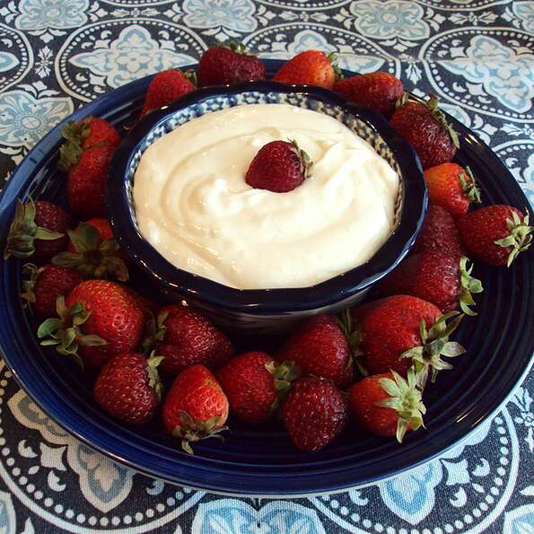

Andre's Easy Fruit Dip

Description
This dip is quick and easy and is a great accompaniment to any type of fruit tray from melon to strawberry to apples or grape.
Ingredents
- 1 (12 ounce) package whipped cream cheese
- 1 (7 ounce) jar marshmallow creme
- 4 ounces sour cream
- 1 teaspoon vanilla extract
Steps
- Beat cream cheese, marshmallow creme, sour cream, and vanilla extract together in a bowl using an electric mixer. Refrigerate until chilled, at least 30 minutes.